Vamos a realizar 6 ejercicios en total:
Se tiene una carpeta html con una web estática (index.html) y se pide crear una imagen Docker con el servidor web Apache que muestre la web. Requisitos: ● Imagen base: debian ● Comandos para instalar Apache: ○ apt-get update ○ apt-get install -y apache2 ○ apt-get clean ○ rm -rf /var/lib/apt/lists/* ● Debe exponer el puerto 80 ● Comando para ejecutar Apache: /usr/sbin/apache2ctl -D FOREGROUND
Vamos a preparar la estructura de archivos:
diego@display:~$ cd Documentos/
diego@display:~/Documentos$ ls
diego@display:~/Documentos$ mkdir ejercicio1
diego@display:~/Documentos$ ls
ejercicio1
diego@display:~/Documentos$ cd ejercicio1
diego@display:~/Documentos/ejercicio1$ sudo nano Dockerfile
diego@display:~/Documentos/ejercicio1$ cd Dockerfile/
diego@display:~/Documentos/ejercicio1$ mkdir html
diego@display:~/Documentos/ejercicio1$ cd html
diego@display:~/Documentos/ejercicio1/html$ sudo nano index.html
Todo esto nos quedaria asi:
ejercicio1/
├── Dockerfile
└── html/
└── index.html
Y dentro del el archivo de Dockerfile ponemos lo siguiente:
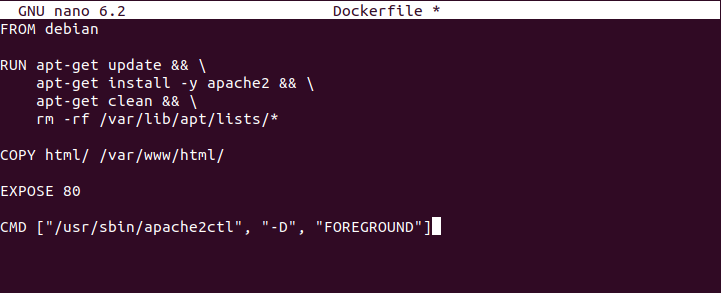
Una vez hecho todo esto tenemos que construir la imagen:
docker build -t apache-ejercicio1 .
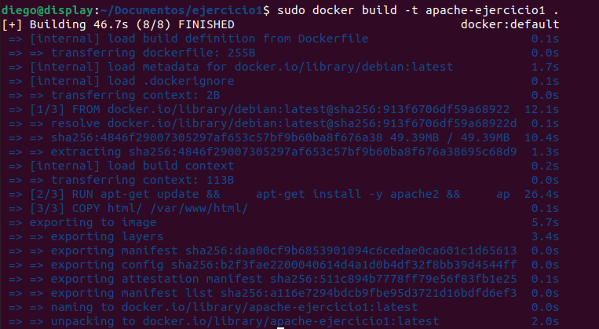
Ahora ejecutamos el contenedor:
docker run -d -p 8080:80 --name web1 apache-ejercicio1
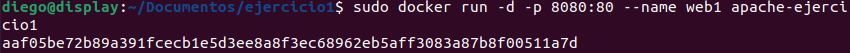
Despues de todo tenemos que comprobar que ha funcionado:
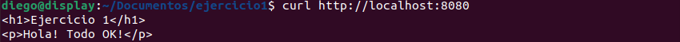
Repite el ejercicio 1 pero usando como imagen base la oficial de Apache.
Creamos otra vez la estructura:
ejercicio2/
├── Dockerfile
└── html/
└── index.html
Y hacemos el Dockerfile y el HTML
diego@display:~/Documentos$ mkdir ejercicio2
diego@display:~/Documentos$ mkdir html
diego@display:~/Documentos$ sudo nano Dockerfile
diego@display:~/Documentos$ cd html
diego@display:~/Documentos/html$ sudo nano index.html
diego@display:~/Documentos/html$ cat index.html
<h1>Ejercicio 2</h1>
<p>Hola! Todo OK!</p>
diego@display:~/Documentos/html$ cd ..
diego@display:~/Documentos$ cat Dockerfile
FROM httpd
COPY html/ /usr/local/apache2/htdocs/
EXPOSE 80
Construimos la imagen:
docker build -t apache-ejercicio2 .
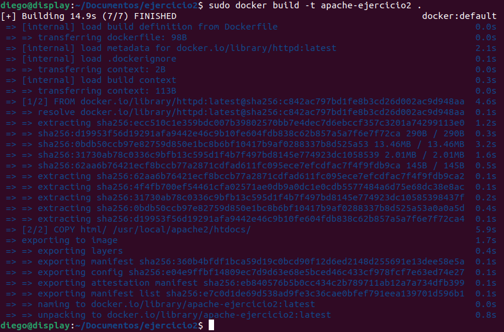
Y construimos el contenedor:
docker run -d -p 8081:80 --name web2 apache-ejercicio2
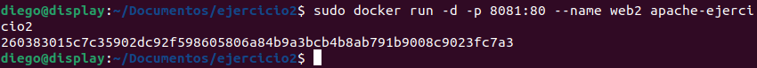
Y veamos como funciona:
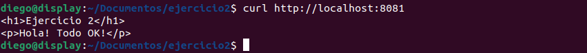
Repite el ejercicio 2 pero usando como imagen base la oficial de Nginx.
Tenemos que hacer esta estructura:
diego@display:~/Documentos$ mkdir ejercicio3
diego@display:~/Documentos$ cd ejercicio3
diego@display:~/Documentos/ejercicio3$ mkdir html
diego@display:~/Documentos/ejercicio3$ sudo nano Dockerfile
diego@display:~/Documentos/ejercicio3$ cd html
diego@display:~/Documentos/ejercicio3/html$ sudo nano index.html
diego@display:~/Documentos/ejercicio3/html$ cat index.html
<h1>Ejercicio 3</h1>
<p>Hola! Todo OK!</p>
diego@display:~/Documentos/ejercicio3/html$ cd ..
diego@display:~/Documentos/ejercicio3$ cat Dockerfile
FROM nginx
COPY html/ /usr/share/nginx/html/
EXPOSE 80
Ahora construimos la imagen:
docker build -t nginx-ejercicio3 .
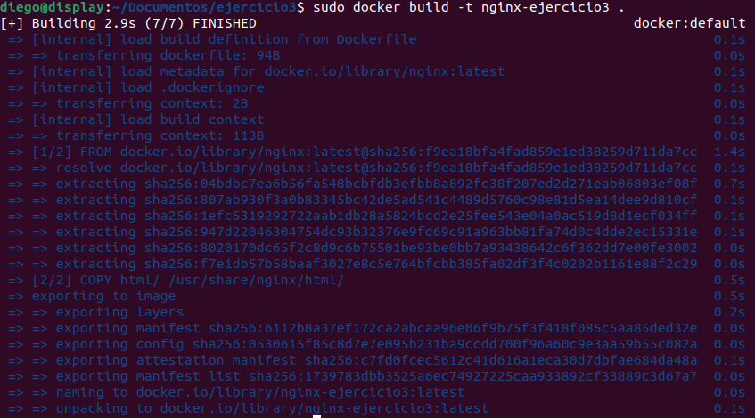
Ahora creamos/ejecutamos el contenedor:
docker run -d -p 8082:80 --name web3 nginx-ejercicio3
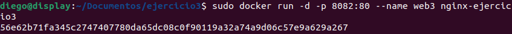
Comprobamos que funciona:
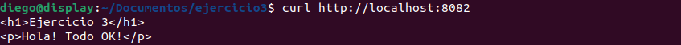
Se tiene una carpeta app con una página web dinámica con php (index.php) y se pide crear una imagen Docker con el servidor web Apache y php que muestre la web. Requisitos: ● Imagen base: debian ● Comandos para instalar Apache: ○ apt-get update ○ apt-get install -y apache2 libapache2-mod-php7.3 php7.3 ○ apt-get clean ○ rm -rf /var/lib/apt/lists/* ○ rm /var/www/html/index.html ● Debe exponer el puerto 80 ● Comando para ejecutar Apache: /usr/sbin/apache2ctl -D FOREGROUND
Creamos la estructura de datos:
diego@display:~/Documentos$ sudo mkdir ejercicio4
diego@display:~/Documentos$ cd ejercicio4
diego@display:~/Documentos/ejercicio4$ sudo mkdir app
diego@display:~/Documentos/ejercicio4$ sudo nano Dockerfile
diego@display:~/Documentos/ejercicio4$ cd app
diego@display:~/Documentos/ejercicio4/app$ sudo nano index.php
diego@display:~/Documentos/ejercicio4/app$ cat index.php
<?php echo phpinfo(); ?>
diego@display:~/Documentos/ejercicio4/app$ cd ..
diego@display:~/Documentos/ejercicio4$ cat Dockerfile
FROM debian
RUN apt-get update && \
apt-get install -y apache2 libapache2-mod-php php && \
apt-get clean && \
rm -rf /var/lib/apt/lists/* && \
rm /var/www/html/index.html
COPY app/ /var/www/html/
EXPOSE 80
CMD ["/usr/sbin/apache2ctl", "-D", "FOREGROUND"]
Construir la imagen:
docker build -t apache-php-ejercicio4 .
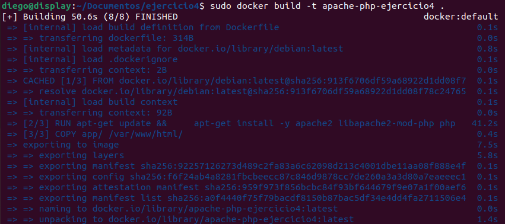
Construir el contenedor:
docker run -d -p 8083:80 --name web4 apache-php-ejercicio4
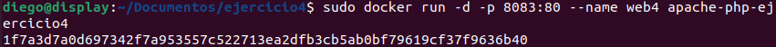
Y ahora comprobamos como funciona:
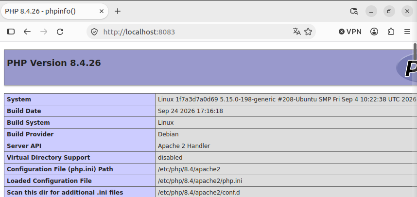
Repite el ejercicio 4 pero usando como imagen base php:apache, que es una imagen de oficial de PHP con Apache ya instalado.
Creamos la estructura de datos:
diego@display:~/Documentos$ sudo mkdir ejercicio5
diego@display:~/Documentos$ cd ejercicio5
diego@display:~/Documentos/ejercicio5$ sudo mkdir app
diego@display:~/Documentos/ejercicio5$ sudo nano Dockerfile
diego@display:~/Documentos/ejercicio5$ cd app/
diego@display:~/Documentos/ejercicio5/app$ sudo nano index.php
diego@display:~/Documentos/ejercicio5/app$ cat index.php
<?php echo phpinfo(); ?>
diego@display:~/Documentos/ejercicio5/app$ cd ..
diego@display:~/Documentos/ejercicio5$ cat Dockerfile
FROM php:apache
COPY app/ /var/www/html/
EXPOSE 80
Construimos la imagen:
docker build -t php-apache-ejercicio5 .
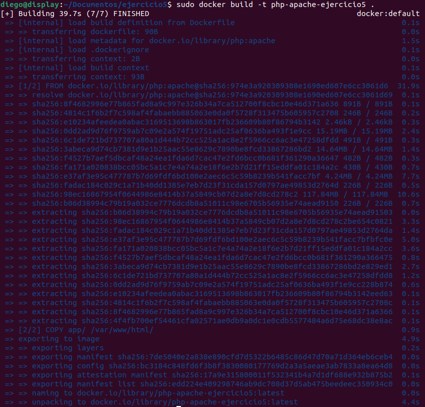
Construimos el contenedor:
docker run -d -p 8084:80 --name web5 php-apache-ejercicio5
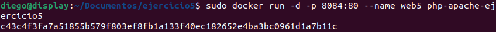
Y ahora comprobamos que funciona:
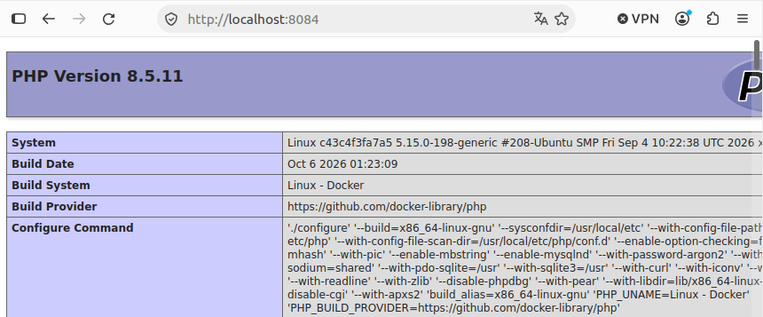
Crea una cuenta el Docker Hub, creo una imagen y súbela. Puede utilizar una imagen de las creadas en el los ejercicios anteriores. Recuerda que la primera parte del nombre de la imagen tiene que coincidir con el numbre de usuario de Docker Hub. Luego borra la imagen local y usa docker run para que se la descargue del repositorio, cree un contenedor y lo ejecute. Documenta el proceso con explicaciones y capturas de pantalla.
Creamos la cuenta en Docker Hub:
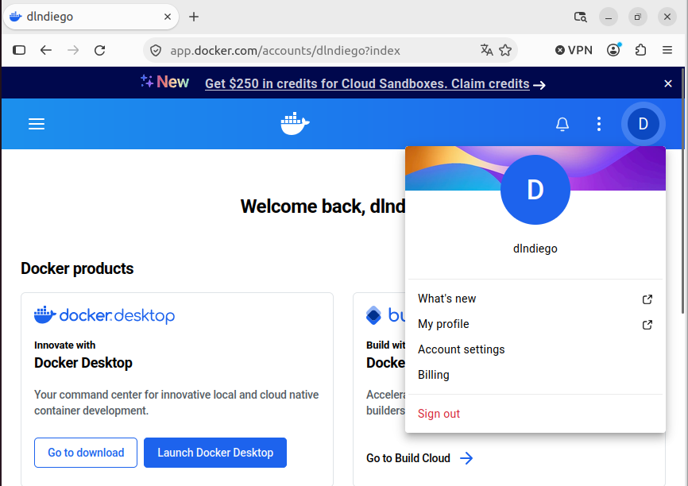
Ahora iniciamos sesion desde el terminal:
docker login
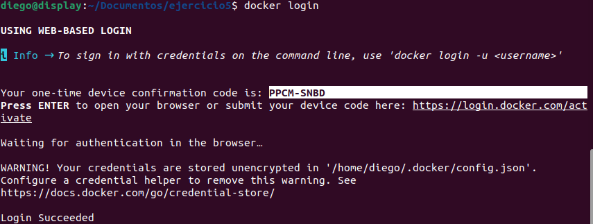
Le ponemos un TAG a una imagen existente:
docker tag apache-ejercicio2 dlndiego/apache-ejercicio2:v1
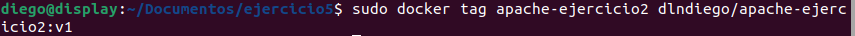
Tnemos que hacer el push a la image: de esta manera:
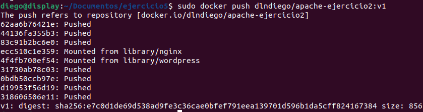
y si accedemos a nuestro perfil vemos como se ha subido la imagen:
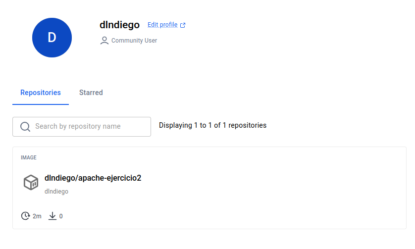
Ahora borramos el contenedor local:
docker ps -a
docker stop web2
docker rm web2
y ahora las imagenes
diego@display:~/Documentos/ejercicio5$ sudo docker rmi dlndiego/apache-ejercicio2:v1
Untagged: dlndiego/apache-ejercicio2:v1
Deleted: sha256:e7c0d1de69d538ad9fe3c36cae0bfef791eea139701d596b1da5cff824167384
diego@display:~/Documentos/ejercicio5$ sudo docker rmi apache-ejercicio2
Error response from daemon: No such image: apache-ejercicio2:latest
y comprobamos que no estan con el docker images:
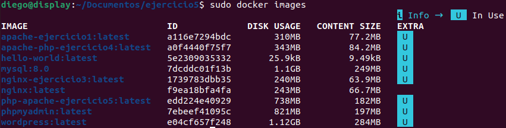
y ahora la ejecutamos desde DOCKER HUB:
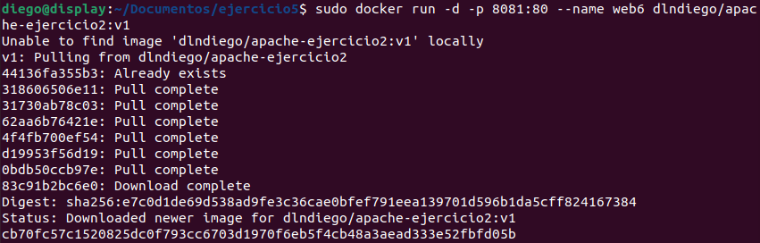
Y comprobamos que funciona:
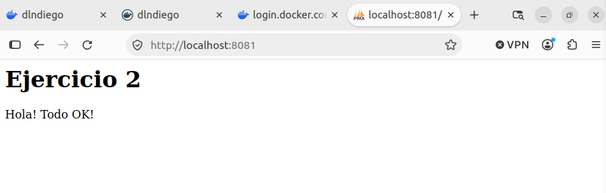